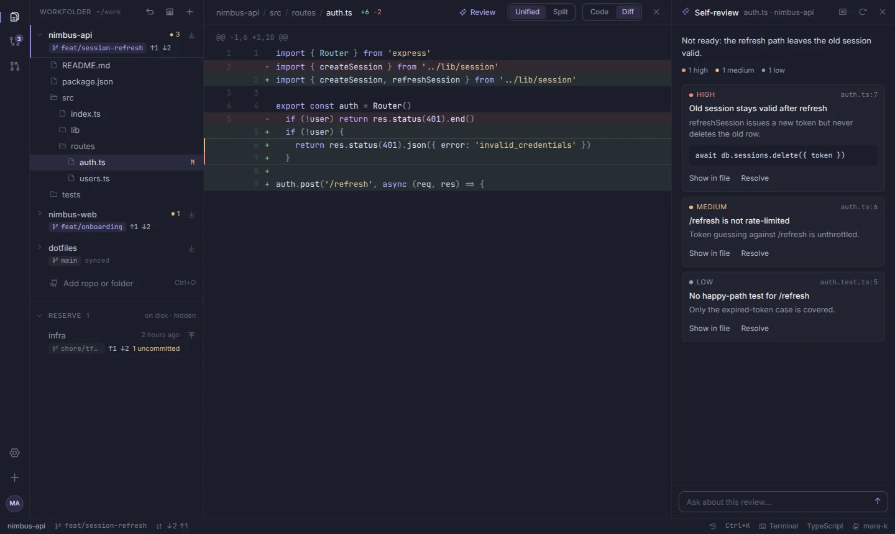
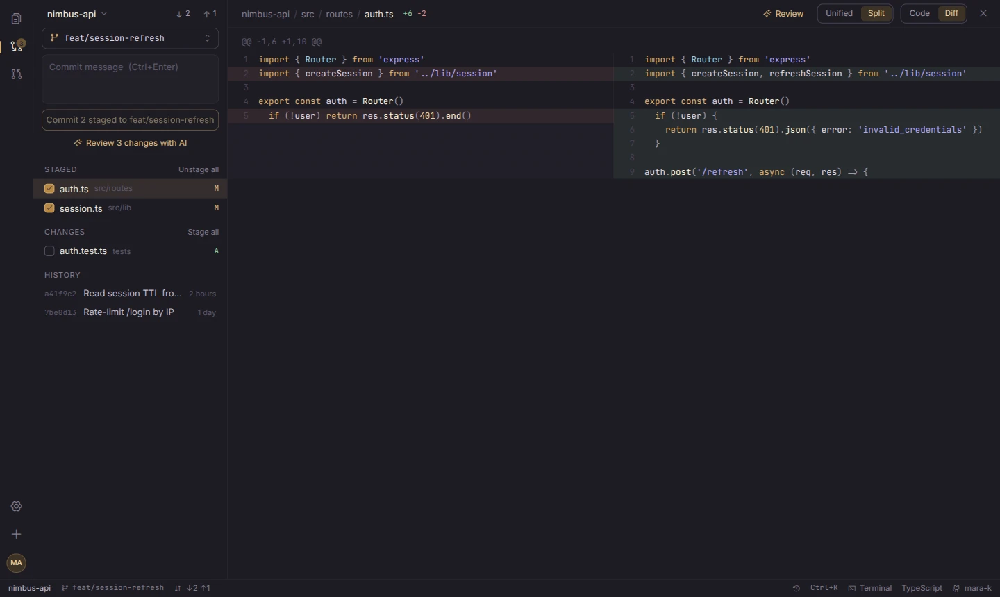

What it does
Nimbus is a small desktop app built around git. It isn't trying to be your editor; it's where you keep every repo you're working on, and where you check your work before it leaves your machine.
- Workfolder and reserve
- Every repo lives side by side in
~/work, and folders from elsewhere can be linked in. Each session starts empty: bring back what you need, grouped by when you last used it or by groups you make yourself. - Source control
- Stage, commit, switch and create branches, pull and push, with unified or side-by-side diffs. Switch every repo back to main in one go.
- Pull requests
- Open, read, check out and squash-merge pull requests through the GitHub CLI, with their checks and changed files.
- AI self-review
- Claude Code reads your changes with read-only tools and points at the lines worth another look, with a suggested fix. Ask it follow-up questions. Nothing is posted anywhere unless you post it.
- A real terminal
- Shell tabs that open in the repo you're in. Editors, dev servers and colours all work.
- Themes and plugins
- Four themes to start with. Plugins add their own themes, commands, right-click entries and status bar items.
- Updates itself
- New releases are signed, install when Nimbus starts, and come with a short note on what changed.

Solstice, one of the four built-in themes, with a side-by-side diff.
How a session goes
- Open NimbusYour workfolder starts empty. Yesterday's repos wait in reserve.
- Bring back what you needPick repos one by one, or restore the last set in one click.
- Do the workChange, review with Claude, commit and open a pull request.
- Close itNext time, the same repos are one click away.
Install
One command, no sudo. It puts nimbus (and the short nb) on your PATH and adds Nimbus to your app menu and desktop. The first start walks you through GitHub, your workfolder and a theme.
You'll need
- Linux on x86_64
- WebKitGTK 4.1:
sudo apt install libwebkit2gtk-4.1-0on Debian and Ubuntu git- Optional: the GitHub CLI for your repos and pull requests
- Optional: Claude Code for AI self-review
Build it yourself
With Rust and Node installed:
git clone https://github.com/MartinRovang/nimbus cd nimbus && ./install.sh
Remove it
rm ~/.local/bin/nimbus ~/.local/bin/nb ~/.local/share/applications/nimbus.desktop ~/Desktop/nimbus.desktop